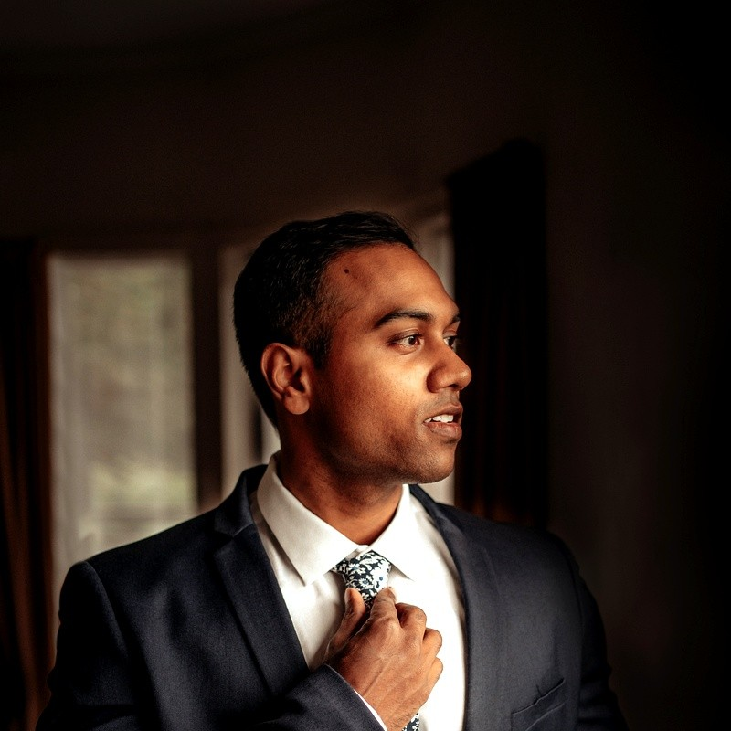

I build AI automation tools for NZ businesses. I work alone, I build the actual software, and I make sure your team can use it without me.
I spent years watching businesses spend thousands on software that sits unused. Tools bought because they were on a shortlist, then left unused because no one was responsible for making them work.
The problem was never the tool. It was that no one was responsible for making it land — for sitting next to people while they figured it out, and fixing the friction that always shows up in week two.
So I started building the tools myself. And the more I built, the clearer it got: the work was always 30% software and 70% craft.
A multi-source pipeline that scrapes 14 NZ directories, enriches each lead with Claude, verifies emails and auto-drafts cold outreach. Replaced a full day of weekly research.
A custom CRM built to fit the actual workflow, kanban-first, sub-1-second load. Custom fields, dashboard, multiple views. Used daily.
Speak into anything: any app, any window, any workflow. Offline Whisper, LLM rewrite, pasted in under half a second.
The code, the logic, the docs are visible to you the whole way through. If you can't run it on day 90, I haven't done my job.
Source code in your GitHub. Credentials in your accounts. Hosting on your bill. No lock-in, ever.
I don't count a project done until adoption is real: training, docs, and being on hand when friction shows up.
I build platforms and AI systems full-time for a large NZ healthcare organisation. If you want the full picture, LinkedIn has it.
Kove is what I do in the evenings and weekends. Same approach, different businesses.
If you've got a workflow eating your team's time, I'd like to hear about it. The first call is free and there's no pitch.